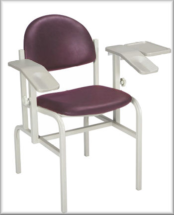
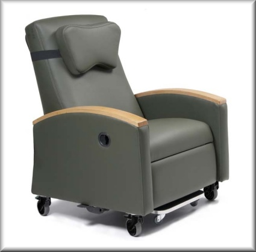
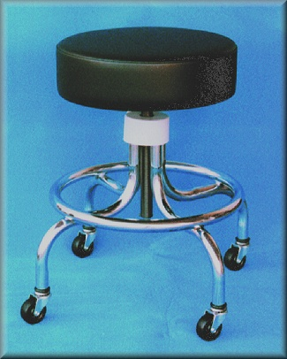

Brewer Phlebotomy
- Durabilidade: Garantia de 5 anos.
- Segurança: Suporta até 158 kg; superfícies resistentes a bactérias, fungos e produtos químicos; atende à norma BIFMA.
- Funcionalidade: Braços angulados para coleta de sangue; superfícies de trabalho removíveis; estrutura de aço soldado com pintura resistente; sistema de ajuste suave nos apoios de braço.
- Conforto do Paciente: Espuma de 5 cm e alinhamento seguro do assento.
- Estética: 12 opções padrão de estofado (cores especiais sob consulta).
.jpg)

Clinical Chair.
- Durabilidade: Garantia de 3 anos para estrutura e componentes mecânicos, 1 ano para estofados e rodízios.
- Segurança: Suporta até 159 kg. Atende aos padrões de flammabilidade California Technical Bulletin 133.
- Funcionalidade: Mecanismo de reclinação unitário, apoio para os pés retrátil, alavanca de reclinação, espuma composta no assento e encosto, rodízios Tente®, opções de suporte para IV e capa para encosto de cabeça.
- Conforto: Espuma composta e assento projetado para maior conforto durante longos períodos de uso.
- Estética: Design moderno e ergonômico, com acabamentos de alta qualidade e várias opções de estofado.
- Dimensões: Altura: 115,6 cm | Largura: 83,8 cm | Profundidade: 92,7 cm | Largura entre braços: 61 cm.
- Apoios de braço: Altura ajustável de 67,95 cm a 76,2 cm. Com ângulos variados dependendo da posição reclinada.
- Peso: Peso do reclinável: 91 kg | Capacidade máxima de peso: 159 kg.
Garantia: Estrutura e mecânica: 3 anos | Estofado e rodízios: 1 ano

Screw Adjustable Stool.
- Durabilidade: Garantia de 3 anos para o quadro e componentes mecânicos. 1 ano para componentes estofados e rodízios.
- Segurança: Suporta até 159 kg. Certificado para 3-Tesla em ambientes de ressonância magnética.
- Funcionalidade: Ajuste de altura de 457 a 622 mm. Base de 4 pernas cromadas ou base de 5 pernas de alumínio fundido, dependendo do modelo.
- Conforto: Assento de 368 mm de diâmetro, com 102 mm de espessura. Aro de aço tubular e pé de tubo para estabilidade.
- Estética: Estofado "MRI Green", disponível em diferentes modelos com ou sem encosto e braços.
- Dimensões: Altura ajustável de 457 a 622 mm. Peso: 9 kg.
- Modelos Disponíveis: Modelos com diferentes faixas de altura (17" a 29") e base de rodízios ou pés fixos.